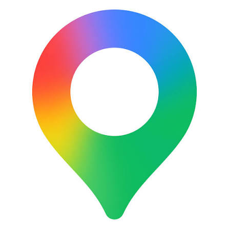

Hábitos ecológicos al alcance de todos
Un puente entre las personas y el planeta
Aprende con datos reales, anota tus hábitos de cada día y encuentra puntos ecológicos cerca de ti.

32 %de la superficie terrestre está cubierta por bosques
33 %de la electricidad mundial ya es renovable
2.200 Mde personas aún no tienen agua potable segura
Explora EcoPuente

Naturaleza
Conoce los ecosistemas y pon a prueba lo que sabes.

Bicicletas
Calcula cuánto CO₂ ahorras al pedalear en vez de usar el carro.

Mapa
Ubica puntos ecológicos cerca de tu ubicación.
Mis hábitos
Marca cada día lo que haces por el planeta y mantén tu racha.
Datos estadísticos
Bosques, residuos, agua y energía en gráficas fáciles de leer.
Donaciones
Apoya causas locales por el agua, los árboles y la bici.